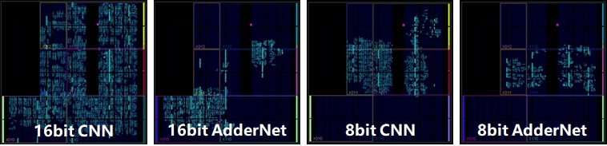

王攀
博士生导师
南京邮电大学现代邮政学院
简介: 王攀于2001年获得南京邮电大学通信工程系学士学位，并于2013年获得南京邮电大学电气与计算机工程博士学位。
2017-2018 美国戴顿大学访问学者。
Email: wangpan@njupt.edu.cn
研究方向:
（1）AI赋能网络安全：主要应用深度学习、强化学习等技术，为SDN/NFV网络、5G核心网/数据中心/边缘云提供智能流量识别与分类、恶意流量识别、入侵检测算法、模型和软件中间件。
（2）大数据分析：面向海量异构网络节点（传感器、网关、机顶盒、摄像头、智能家居等），提供分布式、超大规模海量异构数据采集、存储、ETL和大数据深度挖掘分析与可视化，提供智能运维算法、模型和软件套件。
我正在寻找积极进取的研究生和本科实习生。请随时与我联系以获取详细信息。
[进行中]项目
Actually, model compression is a kind of technique for developing portable deep neural networks with lower memory and computation costs. I have done several projects in Huawei including some smartphones' applications in 2019 and 2020 (e.g. Mate 30 and Honor V30). Currently, I am leading the AdderNet project, which aims to develop a series of deep learning models using only additions (Discussions on Reddit).

Project Page | Hardware Implementation
I would like to say, AdderNet is very cool! The initial idea was came up in about 2017 when climbing with some friends at Beijing. By replacing all convolutional layers (except the first and the last layers), we now can obtain comparable performance on ResNet architectures. In addition, to make the story more complete, we recent release the hardware implementation and some quantization methods. The results are quite encouraging, we can reduce both the energy consumption and thecircuit areas significantly without affecting the performance. Now, we are working on more applications to reduce the costs of launching AI algorithms such as low-level vision, detection, and NLP tasks.
[已完成]项目
成果公开
我们的团队致力于为网络安全和通信网络安全、网络测量、服务质量、深度数据包检测、SDN、大数据分析和应用等开发高效的模型。
会议论文:
- SDN traffic anomaly detection method based on convolutional autoencoder and federated learning
ZiXuan Wang, Pan Wang, ZhiXin Sun
GLOBECOM 2023 | paper - PGAN:A Generative Adversarial Network based Anomaly Detection Method for Network Intrusion Detection System
Zeyi Li, Yun Wang, Pan Wang, Haorui Su
TrustCom 2022 | paper - A Survey of Quantitative Comparative Research on Intrusion Detection Algorithms in Wireless Sensor Networks
Yahong Yang, Pan Wang, ZiXuan Wang, Zeyi Li
DASC/PiCom/CBDCom/CyberSciTech 2022 | paper - An Explainable Intrusion Detection System
Yun Wang Pan Wang, ZiXuan Wang, Mengting Cao
HPCC/DSS/SmartCity/DependSys 2022 | paper - Convolutional One-Dimensional Variational Autoencoder Based Intrusion detection
Kailin Wu, MengTing Cao, Pan Wang, ZiXuan Wang
DASC/PiCom/CBDCom/CyberSciTech 2021 | paper - Few-shot malicious traffic classification based on Siamese Neural Network
Kai Lin Wu, Pan Wang, ZiXuan Wang
HPCC/DSS/SmartCity/DependSys 2021 | paper - Evaluation of feature selection on network traffic classification
Yun Wang, Pan Wang, ZiXuan Wang, Kai Lin Wu
DASC/PiCom/CBDCom/CyberSciTech 2021 | paper - FLOWGAN:Unbalanced Network Encrypted Traffic Identification Method Based on GAN
ZiXuan Wang, Pan Wang, Xiaokang Zhou, ShuHang Li, MoXuan Zhang
ISPA/BDCloud/SocialCom/SustainCom 2020 | paper - Exploratory Study of Class Imbalance for Encrypted Traffic Classification Using CGAN
Pan Wang, Yiqing Zhou, Feng Ye, Hao Yue
2020 | paper - Data Interpolation for Deep Learning based Encrypted Data Packet Classification
Pan Wang, Yiqing Zhou, Feng Ye, Hao Yue
ICNC 2019 | paper
期刊论文:
- FlowGANAnomaly: Flow-based Anomaly Network Intrusion Detection with Adversarial Learning
Zeyi Li, Pan Wang, ZiXuan Wang
Chinese Journal of Electronics 2022 |paper - ByteSGAN: A semi-supervised Generative Adversarial Network for encrypted traffic classification in SDN Edge Gateway
Pan Wang, Zixuan Wang, Feng Ye, Xuejiao Chen
Computer Networks 2021 |paper - 基于代价敏感度的改进型K近邻异常流量检测算法
李泽一, 王攀
南京邮电大学学报:自然科学版 2021 |paper - A Survey of Techniques for Mobile Service Encrypted Traffic Classification Using Deep Learning
Pan Wang, Xuejiao Chen, Feng Ye, Zhixin Sun
IEEE ACCESS 2019 |paper - A Smart Home Gateway Platform for Data Collection and Awareness
Pan Wang, Feng Ye, Xuejiao Chen
IEEE Communications Magazine 2018 |paper - Datanet: Deep Learning Based Encrypted Network Traffic Classification in SDN Home Gateway
Pan Wang, Feng Ye, Xuejiao Chen, Yi Qian
IEEE ACCESS 2018 |paper - A Smart Automated Signature Extraction Scheme for Mobile Phone Number in human-Centered Smart Home Systems
Pan Wang, Xuejiao Chen, Feng Ye, Zhixin Sun
IEEE ACCESS 2018 |paper - Performance Modeling and Suitability Assessment of Data Center Based on Fog Computing in Smart Systems
Pan Wang, Xuejiao Chen, Zhixin Sun
IEEE ACCESS 2018 |paper
授权专利:
- 一种基于知识图谱表示学习和神经网络的协同推荐方法
王攀, 黄琛
中国, ZL202010378310.2 2022